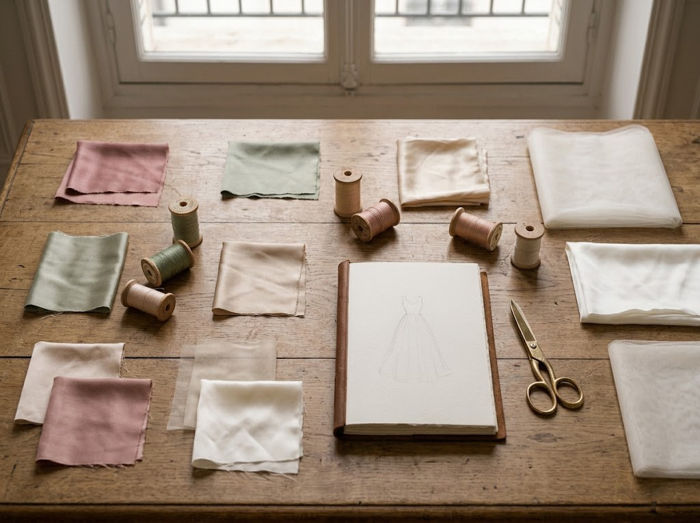

← Journal
Mariage
Un cortège en harmonie

Un cortège réussi ne ressemble pas à une équipe en uniforme. Il ressemble à un ensemble où chacune se sent à sa place.
Partir d’une palette
Deux ou trois couleurs, une matière commune : c’est souvent suffisant pour créer le lien. Le reste peut varier.
Adapter les coupes
Une même couleur et un même tissu peuvent donner des robes très différentes selon la morphologie et l’aisance de chacune.
Penser aux enfants et aux mères
Elles font partie de l’image d’ensemble. Prévoir leurs tenues dès le départ évite les assemblages de dernière minute.